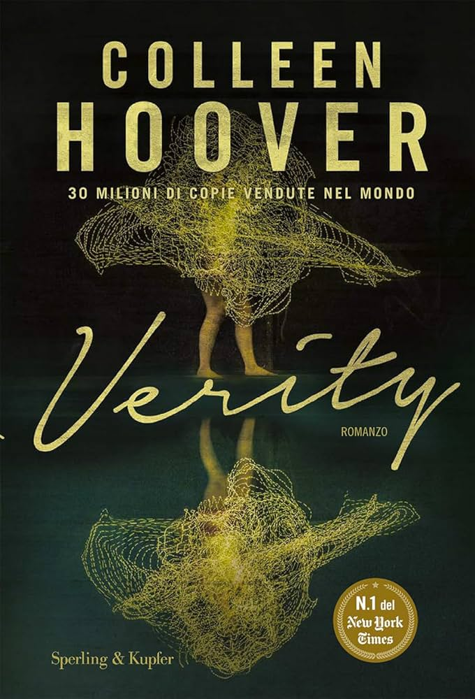
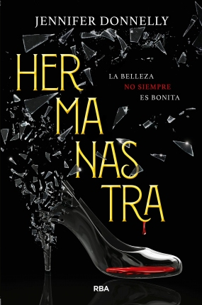

Alguien Está Mintiendo - McManus, Karen M

Alguien está mintiendo de Karen M. McManus es un thriller juvenil que sigue a cuatro estudiantes sospechosos de la muerte de Simon Kelleher, un compañero conocido por exponer secretos en su aplicación de chismes. Bronwyn, la estudiante modelo; Nate, el chico problemático; Addy, la chica popular; y Cooper, la estrella del béisbol, estaban con Simon en detención cuando murió en circunstancias misteriosas. A medida que se revelan secretos oscuros, los cuatro intentan demostrar su inocencia mientras enfrentan las consecuencias de sus propias mentiras, en una trama llena de giros, tensión y autodescubrimiento.
Sana tu Mente -
Mona Lisa Schulz

Sana tu mente de Mona Lisa Schulz es una guía que explora la conexión entre la mente, las emociones y la salud física. La autora, combinando su experiencia como neuropsiquiatra e intuitiva médica, explica cómo las emociones reprimidas y los patrones mentales negativos pueden manifestarse en problemas de salud. A través de casos prácticos y herramientas como afirmaciones, análisis de sueños y hábitos saludables, Schulz ofrece estrategias para identificar desequilibrios emocionales, sanar traumas y promover el bienestar integral. Es una obra que integra ciencia y espiritualidad para fomentar la autosanación y el equilibrio mental.
Una Corte de Rosas y Espinas - Maas, Sarah J.

Una Corte de Rosas y Espinas de Sarah J. Maas es una fantasía romántica que sigue a Feyre Archeron, una joven cazadora que mata a un lobo en el bosque sin saber que es una criatura mágica. Como castigo, es llevada al reino de Prythian, donde debe vivir con Tamlin, un alto fae que gobierna la Corte Primavera. A medida que Feyre se adapta a este peli groso mundo de hadas, descubre que una oscura maldición amenaza a Prythian y que su papel podría ser clave para salvarlo. Entre intrigas, peligros y sentimientos inesperados, Feyre se enfrenta a secretos que cambiarán su vida para siempre.
Verity - Colleen hoover

Verity de Colleen Hoover es un thriller psicológico que sigue a Lowen Ashleigh, una escritora en apuros que es contratada para terminar la exitosa serie de Verity Crawford, una autora famosa que quedó incapacitada tras un accidente. Mientras revisa los archivos de Verity en su casa, Lowen descubre una inquietante autobiografía no publicada, donde Verity revela oscuros secretos sobre su matrimonio y sus hijos. A medida que Lowen se adentra en la vida de los Crawford y desarrolla sentimientos por Jeremy, el esposo de Verity, comienza a cuestionar la verdad detrás de los eventos en la casa. La novela mezcla romance, suspense y giros impactantes, manteniendo al lector al borde hasta el final.
La Chica De La Capa Roja -
Sarah Blakley

La chica de la capa roja de Sarah Blakley-Cartwright es una adaptación oscura y de suspenso del clásico cuento de Caperucita Roja. La historia sigue a Valerie, una joven que vive en un pueblo aterrorizado por un lobo que ha atacado a varias personas. Cuando su hermana es víctima del lobo, el pueblo organiza una caza, pero Valerie descubre que la criatura podría estar más cerca de lo que imaginan. Mientras enfrenta un triángulo amoroso entre Peter, su amor de la infancia, y Henry, un joven rico, Valerie debe desentrañar el misterio detrás de los ataques y confrontar la verdad sobre el lobo, en una trama llena de suspenso, secretos y revelaciones.
Hermanastra -
Jennifer Donnelly

Hermanastra de Jennifer Donnelly es una novela juvenil que reimagina el clásico cuento de "Cenicienta" desde la perspectiva de la hermanastra de la protagonista. La historia sigue a Isabelle, una joven que, después de la muerte de su madre y la llegada de una nueva madrastra, se siente rechazada y atrapada en una vida llena de sacrificios y dolor. Mientras enfrenta las dificultades familiares y la competitividad con su hermana, también se enfrenta a un dilema moral que la llevará a tomar decisiones difíciles sobre su vida, su familia y su futuro. La novela explora temas como la identidad, el sacrificio, la rivalidad y la redención, presentando una versión más compleja y humana de la famosa historia de "Cenicienta".